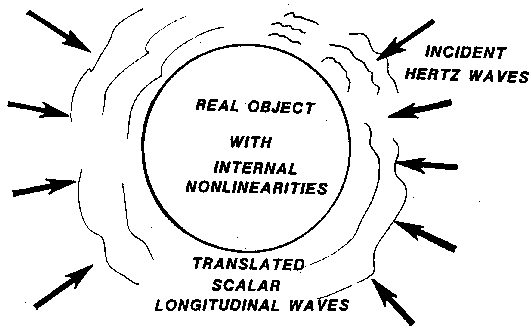

TOWARDS A NEW ELECTROMAGNETICS
PART 4: VECTORS AND MECHANISMS CLARIFIED
SLIDE 46.
THE SCALAR AURA

|
We examine now an object with temperature, that is, a normal object continually absorbing ordinary EM radiation and continually emitting EM radiation. The object has a small fraction of its incident energy expressed as a scalar aura around it, because of translation. Note that normal detectors will not detect this aura, but special two-stage interferometric detectors will detect it. Also note that the object replenishes- the ordinary radiation flow by its translation of some of its incident scalar radiation into the normal or "transverse" (so-called) radiation. The entire internal pattern -- all interactions and functions of the body -- are precisely present in its scalar aura, down to the finest detail. This makes an x-ray pale by comparison. True psychics actually use the nonlinearity of their nervous systems (note the avalanche ion discharges across dendrite gaps) and the interferometric aspects (note two cerebral hemispheres, connected by a corpus callosum) to detect the scalar aura. This is a physical fact and not esoteric delusion. To control this, however, is normally as difficult as learning to walk a high wire and do acrobatics on it. There are not many high wire walkers in the world, but it certainly is a skill within human control capability and purview. T. Galen Hieronymus was absolutely correct when he stated that the entire internal working pattern of an object is radiated by that object in terms of an extraordinary energy, which he called "eloptic" energy. It is actually translated scalar wave energy, and entirely consistent with present EM theory when the glaring errors in its foundations are corrected. Shortly I hope we will see instrumentation which can directly examine the
scalar aura in the finest detail, seeing every illness, and simply setting
dials to radiate the body with gentle, harmless scalar waxes to directly correct
illnesses. |